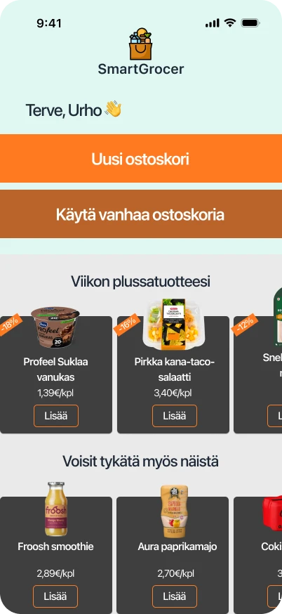
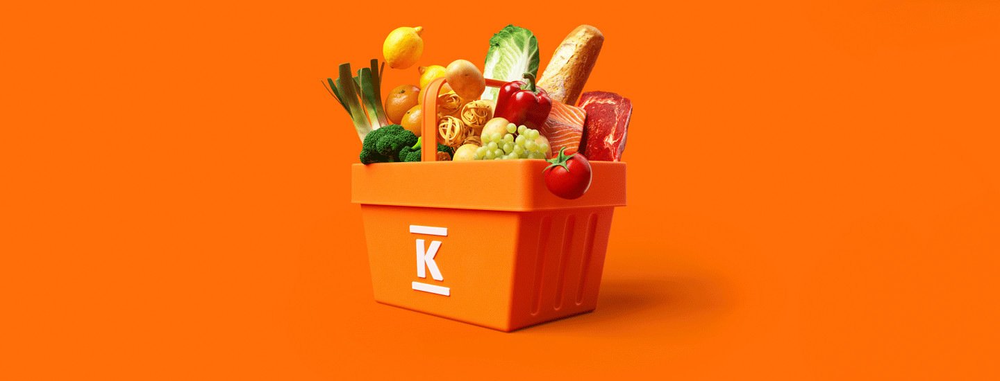

What I explored
How self-scanning could support the full grocery journey: planning at home, finding products in-store, seeing K-Plussa benefits, packing while shopping, and leaving without a queue.
UX Design / Retail Service Concept
SmartGrocer is a Kesko self-scanning concept that connects dedicated handheld scanners with K-Plussa, synced shopping lists, store guidance, and real-time savings.
5 min read
Solo concept, 2025

How self-scanning could support the full grocery journey: planning at home, finding products in-store, seeing K-Plussa benefits, packing while shopping, and leaving without a queue.
The strongest idea is not the scanner itself. It is the connection between Kesko's existing loyalty ecosystem, shopping list data, and a more predictable in-store flow.
The 20% faster shopping target is a hypothesis. It should be tested with real trips, different customer groups, and actual store layouts before being treated as a product claim.
Kesko has the infrastructure, the loyalty system, and the customer base. What it does not have is a self-scanning experience that feels like it belongs to the whole shopping trip.
This concept starts from a simple question: if the store already knew what you came to buy, why should the scanner behave like a disconnected barcode tool?
The opportunity is to move self-scanning away from being only a shortcut at checkout. SmartGrocer connects planning, product finding, loyalty benefits, scanning, packing, and exit into one flow.
Regular grocery shoppers who use lists, care about speed, and want less uncertainty in-store without turning the trip into a phone-heavy task.
The shopper enters a familiar but busy store with a list, limited time, and a need to find items, benefits, and checkout with fewer interruptions.
Customers finish faster, ask for less help, feel more certain about offers, and avoid the unload-repack friction at checkout.
I spent four years working at K-Citymarket, so I had seen the checkout experience from both sides of the counter. People want grocery shopping to be faster, but not if the tool creates new confusion in the aisle.
When I came across Prisma's handheld scanner concept, my first reaction was that Kesko should have something similar. My second reaction was that the scanner should do more than reduce the queue at the end.
Kesko has tried phone-based scanning before, but phone-based flows inherit every device problem: screen sizes, battery levels, camera quality, permissions, accessibility settings, and user confidence.
Dedicated hardware is a bigger upfront investment, but it creates a controlled and consistent experience. That matters in grocery retail, where the user group includes tech-savvy students, busy families, and older shoppers who just want the process to work every time.
Most self-scanning solutions treat the scanner as a checkout tool. You scan products, pack as you go, and skip part of the register flow. Useful, but narrow.
The missing layer is awareness. The scanner usually does not know your shopping list, does not guide you through the store, and does not show your loyalty savings until the end. It saves time at checkout while leaving friction everywhere else.
SmartGrocer connects the scanner to the K-Plussa ecosystem. A customer can sync a shopping list from home, pick up a scanner in-store, and move through the trip with product guidance, live scanning, and relevant offers visible as they shop.
The scanner becomes a companion for the whole trip: what is still left on the list, where the next item is likely to be, what offer applies now, and what the basket total looks like before reaching checkout.
Key functionalities
No more backtracking through the store because the list and layout do not speak to each other.
.png)

K-Plussa savings should be visible while shopping, not only discovered at the receipt.

.png)
The flow starts before the store visit. The customer builds or imports a list in the app, then syncs it to the scanner after identifying with K-Plussa. In-store, the scanner separates found, missing, and suggested products so the user does not have to mentally track the trip.
Scanning and packing happen in the aisle. At the end, the customer confirms the basket at a self-checkout gate instead of unloading everything into a queue.
K-Plussa is the reason this concept is more interesting than a generic scanner. The scanner can show relevant offers, track savings in real time, and connect the trip back to an existing loyalty identity.
The important design decision is timing. Offers should support the current trip instead of turning the scanner into an advertising surface. The user needs help deciding, not another screen asking for attention.
The concept also leaves room for Kesko's AI assistant to mature into the flow. In the MVP, AI should not take over the experience. It could help with substitution suggestions, recipe-based lists, allergy-aware alternatives, or explaining why a product is recommended.
The constraint is important: AI should reduce decision effort, not create a second conversation layer inside a busy grocery trip.
This is a concept, not a shipped product, so there are no conversion or time-saving metrics to report. The 20% faster shopping target is a design hypothesis based on removing repeated friction points: list checking, product searching, offer confusion, checkout waiting, and repacking.
If I developed this further, I would prototype a narrow store trip around 10-15 common products and test whether customers actually move faster, feel less uncertain, and need less staff help.
The strongest part of SmartGrocer is the system fit. Kesko already has many of the ingredients: stores, loyalty data, app behavior, customer relationships, and enough scale to justify controlled hardware.
The risk is scope. It would be easy to turn the scanner into a feature-heavy mini-app. The better MVP is narrower: sync the list, guide the trip, scan reliably, show savings clearly, and make checkout feel almost invisible.